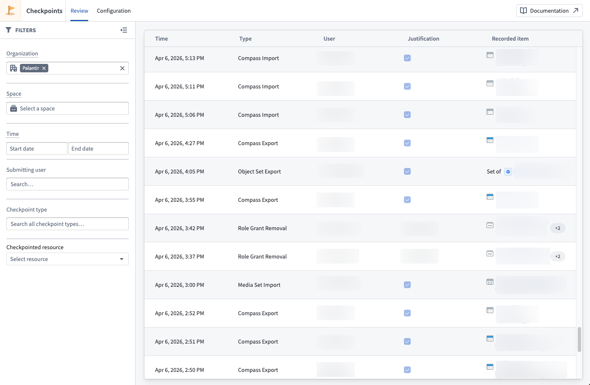

Review checkpoint records
Once created, checkpoint records can be reviewed by various users on the platform. Typically, this may include a data protection officer or other data governance users.
The Checkpoints application enables users to review checkpoint records created on the platform.
The Review tab of the Checkpoints application presents a table of all records you have permission to view, subject to your current filters. A Details panel reveals additional information stored in the record selected in the table. The following information is available for each record:
- The user who created the record.
- The timestamp of when a record was Created.
- The Checkpoint Type of the record.
- The Checkpoint Language, which includes the Checkpoint Title, Checkpoint Prompt, and Checkpoint Description. These values are inherited from the checkpoint configuration but are static; they always reflect the text shown to a user in the checkpoint and will not be updated if the underlying checkpoint configuration is edited or deleted.
- The Justification a user provided.
- Checkpointed Items for the interaction: For checkpoint types that describe an interaction involving a resource or other entity in the platform, references to those resources or entities will be saved in the record. For example, if you attempt to export a resource and submit a checkpoint generated from a configuration of type Compass export, then the record will contain a checkpointed item reference to this resource. Likewise, if you submit a checkpoint generated from a configuration of type Submit action, then the record will contain a checkpointed item reference to the Action type (including related metadata, like the Action type's Ontology and that Ontology's version at time of submission).
- A Checkpoint RID uniquely identifying each record.
- The Checkpoint Configuration RID uniquely identifying the checkpoint configuration the checkpoint was generated from.

Permissions to view records
To view a checkpoint record, you must meet one of the following criteria:
- Record creator: You created the checkpoint record.
- Review records by resource permission: You have the
Review records by resource (checkpoints:review-records) operation on the checkpointed resource. By default, this operation is not granted to any roles in the default role sets; you will need to create or modify roles to grant this operation.
- Space Administrator: You have the
Space Administrator role on the space containing the checkpointed resource.
- Organization Administrator: You have the
Data governance officer role for the organization in Control Panel, which allows you to review checkpoint records submitted by all users in that organization.
Foundry redacts certain resources or users contained in a record if you do not have the necessary permissions to view that item. Additionally, Foundry will not show any records made by users in an Organization that you cannot discover.
Filtering records
The Review tab provides filters to refine which checkpoint records are displayed. You can use all the filters described below in combination:
- Organization: Show records created by users in a given Organization.
- Space: Show records with checkpointed items located in the specified space at the time of record creation.
- Checkpoint type: Filter records by their checkpoint type.
- User: Filter records based on the submitting user.
- Checkpointed resource: Filter records that reference a specific resource as a checkpointed item.
- Time: Filter records based on when they were created.